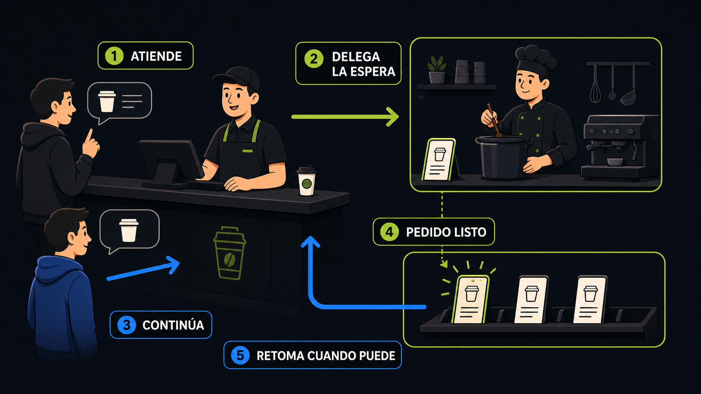
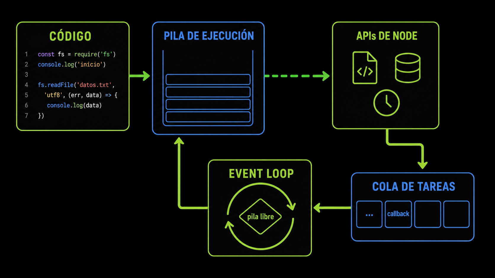
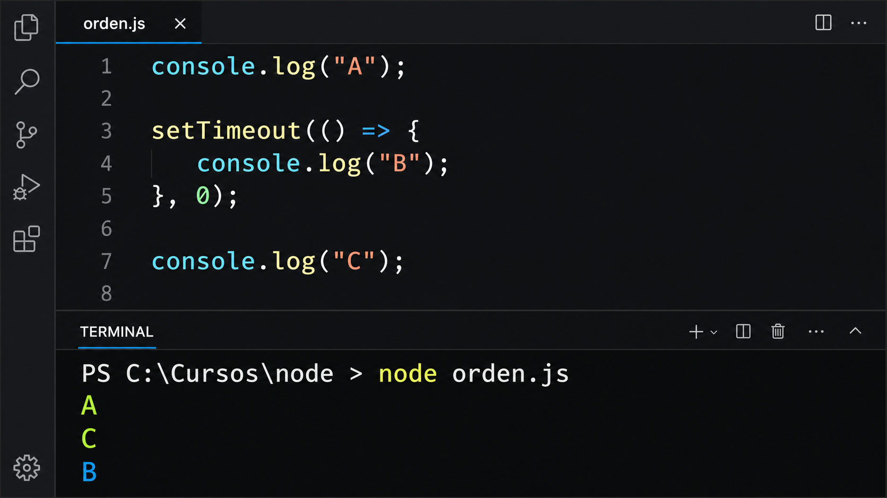

Cuatro piezas
Pila de ejecución
Ejecuta la tarea actual.
APIs de Node.js
Administran esperas de archivos, red o timers.
Cola de tareas
Conserva callbacks listos.
Event loop
Permite ingresar la próxima tarea cuando la pila queda libre.

Predicción A, B y C
orden.js
console.log("A");
setTimeout(() => console.log("B"), 0);
console.log("C");
Leer sin detener el programa
leer-archivo.js
const { readFile } = require("node:fs");
console.log("Inicio");
readFile("datos.txt", "utf8", (error, contenido) => {
if (error) return console.error("No se pudo leer");
console.log("Archivo listo:", contenido);
});
console.log("Fin");readFileSync ocupa la pila hasta terminar.
readFile delega y avisa mediante callback.
COMPROBACIÓN
0/4Comprendo el orden asíncrono
Marcá cada punto después de comprobarlo.